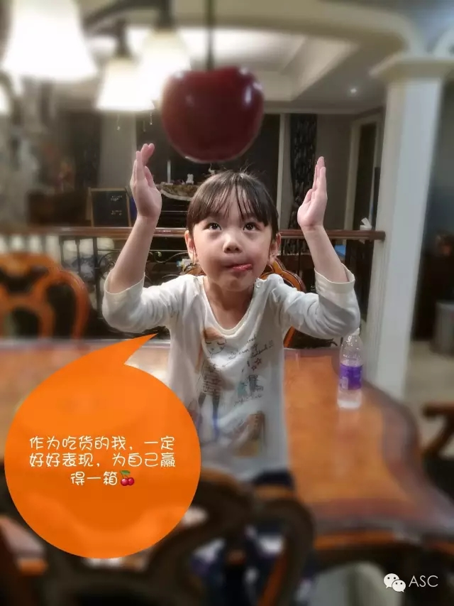
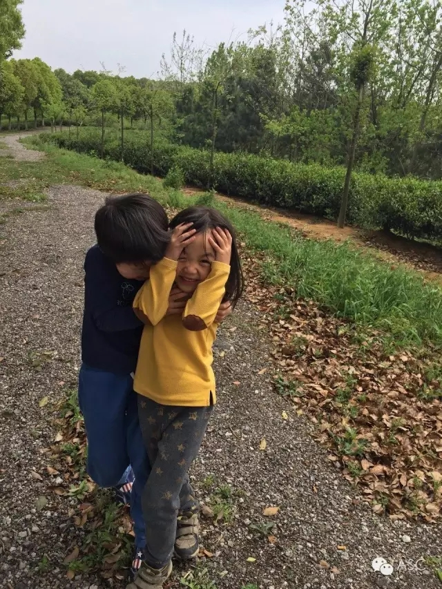
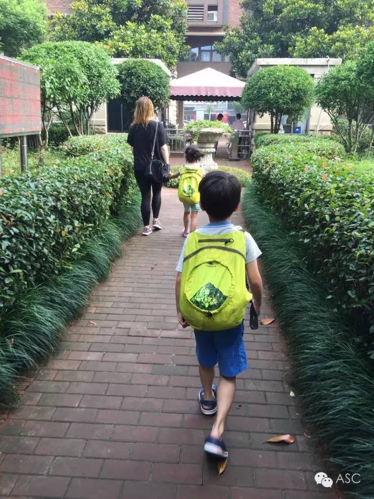
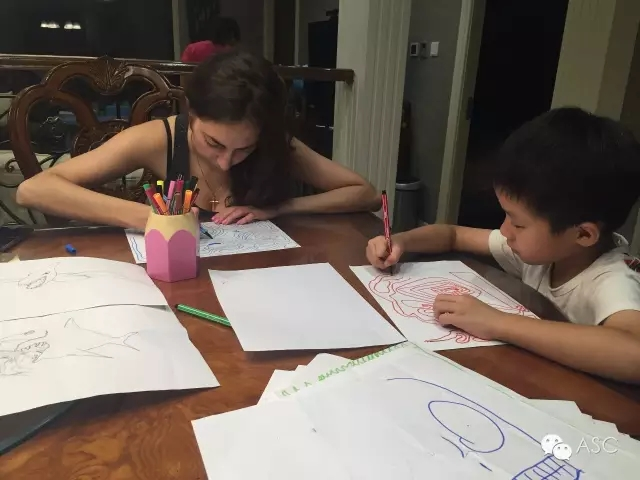

互惠动态
|
|
你无须路过我的路，更无须苦过我的苦！
您希望孩子成为什么样的人？
成功的人？还是快乐的人？
......
嗯，成功的人，但是快乐也很重要！
看，分歧出来了吧？

从小我们就被教育“吃得苦中苦，方为人上人”洗过脑，生活和学习上都吃过很多苦，内心对“成功”有着强烈的渴望。因为只有满足那些渴望，才似乎对得起吃过的苦。
而我是直到上大学之后，才意识到这一点，才明白原生家庭的差异对人的影响有多大。
跟室友聊天时听她说，儿时的自己看中一件礼物，她妈妈首先想的是：如果给孩子买了，我们至于过不下去吗？既然不至于，那就买吧，为什么不让孩子高兴呢？
而我回想我的童年，如果看中某件东西，我妈的想法首先是：如果不给孩子买，她至于过不下去吗？既然不至于，就不用买，哪能这么惯着她呢？
在两种完全不同的教育背景下成长起来的我们，总能形成鲜明的对比：我总是攒攒攒，她总是买买买。我永远要在比较性价比，而她只考虑是否真喜欢。

我用了很多年，才搞明白我的“穷病”的根源：从小被教育多吃苦。
回首年少经历，我十几岁开始承担家务。每个寒暑假都自觉包揽了自己家、奶奶家、姥姥家的家务活。除去日常的刷锅洗碗打水扫地，还包括床单被罩窗帘的拆洗，全家的大扫除。没有洗衣机，全靠一个大红盆，支起搓衣板，一天下来，手指总得起几个水泡。
打水要去院子里，把水桶送到地下水井，打满后一把一把拔上来，提到屋里倒入大缸。
后来上高中，在学校住宿，每个周末回一次家，都会蒸好够全家吃一个周的馒头。
那时的我，是个十几岁的青葱少女，手上却有不少茧。
可即便如此，我还时常被老妈批评：“干这点活算什么？我们小时候，砍柴推磨，挑水拉煤，还得忍饥挨饿，你们现在这些孩子，就是吃苦太少了！”
在这样的洗脑之下，我一直觉得自己不够吃苦，也一直不断地接受她对我进行的吃苦再教育。
在当时，这种情况不独我一个。身边很多同学的家长，都是这种教育观念：物质上的匮乏、体力上的劳动根本算不上什么，最好能把种田耕地、上山下乡、三年自然灾害的苦都吃一吃，这孩子才懂得生活多么不易，过日子多么艰难。
直到多年后，我才真正意识到这是种错误，而同时，也逐渐理解了这种类型的父母。
他们一生苦难坎坷太多，待到有了我们这一辈，改革开放的春风让生活好起来，我们不必吃糠咽菜节衣缩食，但他们内心仍有一个恐惧、凄苦、失衡的小孩。
所以他们看我们，消费是错的，舒适是错的，享受是错的。
唯有吃苦才是正确的——体力上的劳动，生活上的俭省，学习上的拼命。

儿时邻居家有一个小伙伴，她妈妈对她极为严苛。学校上书法课需要买毛笔，她妈妈不同意，找出家中废弃多年、笔毛已开始脱落并开叉的旧毛笔，并振振有词地教育：“学习哪有不苦的？先用旧笔练，等有了好笔才能写得更好！”
不止是毛笔，她几乎所有吃穿用度都是最差的。她妈妈坚持认为，用最差的东西，最努力的学习，还能学出最好的成绩，这才是最高的人生性价比。
我支持挫折教育，也支持培养孩子的吃苦精神。但我反对的是，让孩子去吃自己吃过的苦。
社会和科技，永远在进步。每个时代对“吃苦”的定义是变化的。
那些拿孩子生活的时代，去跟自己成长的时代比较，认为孩子不肯吃苦，总是想方设法让孩子去吃自己以前的苦的父母，都是没有真正长大的小孩。
陈丹燕在《上海的金枝玉叶》里写过：是不是一个人的品质是童年生活在就确定了的，而且很有可能，富裕明亮的生活，才是一个人纯净坚韧品质的最好营养，而不是贫穷苦难的生活。
我也曾一度认为，只有吃苦才会让人变强。但后来我理解真正吃苦的意义，不止让我们变得坚强，更是让我们学会共情，懂得理解他人，扶助弱小，感知温暖，珍惜美好，是让我们的心变得柔软，慈悲。而不是变得坚硬、冷漠。
不要再让孩子吃不必要的苦，生在这个时代、这个生活的背景下尽可能多的陪伴和无条件的爱。无论未来的生活还是学习，我们都需要去享受这时代进步带来的便利，去使用科技进来的更高效和先进的条件。

有些苦，真的不必非要吃。
回想学生时代，我们被灌输的刻苦学习，要么是凿壁偷光，萤囊映雪，要么是头悬梁，锥刺股。相比之下，我们晚上复习到十点半算什么？一个星期休息半天算什么？每天要完成七门作业算什么？
老师说：苦不苦，想想红军两万五。
高考冲刺前，多少教室挂着标语：只要学不死，就往死里学。
十年寒窗，快乐全无。
好不容易熬到大学，以为解放了，再也不用那么幸苦地起早贪黑地学习了。可又遇到了阻碍我们奔向自由幸福的象牙塔生活的拦路虎---大学英语四六级考试。考完四级还有六级，oh，My God！记得考六级的时候，跟室友一起买了本六级单词总汇，相约一起背。怎么背也背不完以A开头的前两页。突然有一天，我发现她在背以Z开头的最后一页，我大惊：“你怎么背的这么快，都到最后了？”她无奈地说：“不是啊，前面的实在记不住，我改从倒数第一页开始背了！”
我们以最苦逼的方式学了这么多年，回头看看，大多都是事倍功半。
学习和生活一样，有更好的方法和手段，为什么一定要吃从前的苦呢？
之前跟一个朋友交流自己学生时代学英语的心得，感叹地说：“农村的教育比较落后，上到初一的时候才开始学英语，一个暑假的小升初补习收获也不大，开学也只认识那几个字母。后来，虽然通过努力，英语成绩虽然过的去，可提到说，简直就是Chinglish。不敢说，怕说错，也没有可以交流的对象，况且那时候只重视分数。”
而朋友表示，现在的孩子学英语不再仅仅只看重分数了，会说、敢说、能说同样也很重要。像她堂哥家的女儿才四岁多就开始学英语了。家里通过ASC互惠生申办中心找了个荷兰的小姑娘，孩子当时真的没有正式接触过英语，一个英语单词都不会，可是经历了半年左右的时间，英语说的很溜。儿童是天生的语言学家，而学语言最好的方法是把孩子放到那个语言环境中， 听母语国家的人去说话，不断地去模仿。
但是对于多数的中国人来说，想找到英语母语国家的人练习英语还是很不容易的。这种情况下作为家长可以想办法来制造这种环境：
而来华互惠生以家庭成员的身份入住中国家庭，为孩子营造一个全天候、浸泡式地外语学习环境，更能零距离领略西方文化色彩。

关于互惠，您了解得够多么？
请外国学生来家庭照顾孩子，辅导孩子外语？
只了解这些是不够的！
获取更多信息请参考以下方式：
联系ASC：
电话：86-21-61116069(上海中心）
86-25-66065662（南京中心）
手机：15601666586（可加微信）
Q Q：3259637585
微信：asc-center
邮箱：info@asc-center.com
网站：www.asc-aupair.com

感谢您对我们的关注